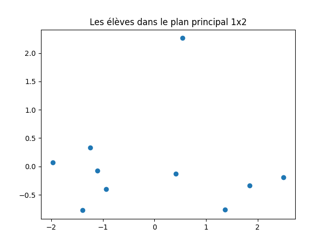

Réduction de dimension
Dans ce TP, nous abordons la réduction de dimension d'un jeu de données, en particulier l'analyse en composantes principales, méthode très connue, très utile et très utilisée.
On pourra consulter mes notes de cours de fouille de données pour une présentation de la réduction de dimension (chapitre 11).
À l'issue de ce TP, vous m'envoyez par email un compte-rendu (format pdf) indiquant la réponse aux questions qui sont posées. Vous m'envoyez également un fichier python réalisant toutes les manipulations de ce TP : je dois pouvoir exécuter ce fichier en tapant python3 nom-de-votre-fichier.py et reproduire vos résultats. Cette exécution ne doit pas provoquer d'erreur de python. Remarque : un notebook ne convient pas.
Introduction
La réduction de dimension a pour objectif de diminuer le nombre d'attributs d'un jeu de données, en se concentrant sur des attributs réellement pertinents. D'un point de vue géométrique, son objectif est de déterminer le sous-espace (la variété) dans lequel les données vivent.
Là encore, à chaque fois que cela est possible, une exploration visuelle des données est essentielle pour anticiper et comprendre.
Analyse en composantes principales
Description de l'objet PCA de scikit_learn
On utilise la méthode PCA () de scikit_learn. Sous sa forme la plus simple, on l'utilise comme suit. On commence par créer un objet PCA :
acp = sklearn.decomposition.PCA ()
que l'on applique ensuite sur un jeu de données centrées réduites contenu dans une matrice X :
acp.fit (X)
L'objet acp contient différentes informations :
Remarque : on peut utiliser un objet scaler() mais cette méthode est buggée : le calcul de l'écart-type est faux car la moyenne est estimée et non pas connue, donc le dénominateur doit être N-1 et non N, où N est le nombre de données. Si N est grand cela ne fait pas de grande différence ; si N est petit, il vaut mieux faire le centrage et la réduction « à la main ». Pour obtenir la valeur correte de la variance, il faut ajouter l'option ddof = 1 à l'appel de la méthode var ().
acp. explained_variance_contient les valeurs propres dans l'ordre décroissant. Ce sont donc les variances selon les différents axes principaux.acp. components_: chaque ligne contient un vecteur propre, donc une direction principale. Le vecteur en iè ligne correspond à la iè valeur propre.acp. explained_variance_ratio_contient la proportion de variance expliquée de chacun des axes principaux.
Mise en application
On va mettre en application l'analyse en composante principale sur un petit jeu de données disponible là. Il contient les caractéristiques de 10 élèves : leur taille, leur poids, leur âge et leur moyenne.
À faire :
- lire le jeu de données dans un tableau de données.
- centrer et réduire les attributs.
- Visualiser ce jeu de données : que voyez-vous ?
- En réaliser l'ACP.
Pour l'instant, on a fait des calculs qui n'a pas beaucoup d'intérêt en tant que tel.
Nous abordons maintenant la partie vraiment importante : l'interprétation de ces calculs savants.
Commençons par observer et visualiser la proportion de variance expliquée par les composantes principales successives. Faites un graphique comme celui-ci :

Qu'en déduisez-vous ?
On peut ensuite visualiser les données dans les plans principaux. Les coordonnées des données dans l'espace factoriel sont obtenues par acp. tansform (X).
À faire : représenter les données dans le plan principal et dans le plan défini par les axes principaux 1 et 3.
J'obtiens cela :


Pensez-vous que le second graphique (plan principal 1x3) soit pertinent ?
Comme on l'a vu en cours, le fait de réduire la dimension déforme le nuage de points. Il faut donc calculer cette déformation pour chaque donnée et écarter ou du moins identifier les données dont la projection dans un plan principal n'est pas fidèle à sa position relative dans l'espace des données. Pour cela, on mesure le cosinus au carré de l'angle entre la demi-droite passant par l'origine et cette donnée d'une part et le plan principal que l'on considère d'autre part. Si ce cosinus au carré est inférieur à 0,3, la déformation est importante (angle > 57°).
À faire : sur le graphique précédent, identifier les points dont la projection est déformée et les affichez avec une couleur particulière.
J'obtiens cela :


Il faut déterminer le nombre de dimensions dans l'espace factoriel qui sont pertinentes. Pour cela, on utilise la proportion de variance expliquée par chacun des facteurs, autrement dit, les valeurs propres de la décomposition spectrale. Le creux du coude indique ce nombre.
À faire : faire un graphique indiquant la proportion de variance expliquée. Déterminer la dimension de l'espace factoriel.
Les axes principaux correspondent à des combinaisons linéaires des attributs originaux. La corrélation entre ces axes et les attributs originaux indique l'information que contient chaque axe principal par rapport aux attributs initiaux. On peut calculer, afficher et analyser ces nombres. On peut aussi réaliser le cercle de corrélation. Le faire.
J'obtiens cela :

Activités en autonomie
Appliquer ce qui vient d'être expliqué aux jeux de données suivants :
- Les iris qui sont disponibles dans scikit_learn en faisant
sklearn.datasets.load_iris ().data. Faites-en une ACP. Quand vous visualisez les iris, il est intéressant d'utiliser une couleur différente pour chacune des classes. - Ce fichier (que l'on a déjà rencontré). Retirez les données ayant des NAs avant d'en faire une ACP.
- Réalisant une projection de données dans un plan, l'ACP permet de visualiser dans le plan des données décrites par de nombreux attributs. C'est ce que nous faisons pour ce jeu de données et le suivant.
Ce fichier contient une matrice qui indique la distance routière entre chaque couple parmi 21 villes européennes. À partir de ces distances, on aimerait obtenir une visualisation en 2 dimensions de la position des villes les unes par rapport aux autres. Projeter ce jeu de données dans le plan principal : chaque donnée correspondant à une ville, afficher le nom de la ville à sa position dans le plan principal. Vous devez obtenir un graphique comme celui-ci :

Attention, ce graphique n'est absolument pas celui que vous devez obtenir. Je l'indique juste pour vous montrer le type de graphique attendu : la position des villes dans le plan.
Que constatez-vous ? (Bien sûr, on aimerait que la position des villes corresponde à peu près à leur position sur une carte géographique.) Comment pouvez-vous déterminer si cette représentation en 2D est fidèle au jeu de données ? - Ce fichier contient une matrice qui indique le nombre d'occurrences de chacune des 26 lettres de l'alphabet latin dans un même texte (issu de la constitution européenne) traduit dans 19 langues européennes. Il est intéressant d'en faire une ACP et de projeter les langues dans le plan principal afin de visualiser leur proximité en terme de fréquence d'apparition de chacune des lettres. Par contre, pour ce jeu de données, il faut réaliser un pré-traitement des données pour que l'ACP ait un sens : lequel ?
Comme ci-dessus pour les villes, afficher le nom des langues. En fonction de vos connaissances (même limitée) en linguistique, cette projection en 2D vous paraît-elle pertinente ? Il est également intéressant de projeter les lettres dans le plan principal pour visualiser leur proximité en fonction de leur utilisation dans ces 19 langues européennes. Faites le graphique correspondant. Comment pouvez-vous déterminer si cette représentation en 2D est fidèle au jeu de données ? - En classification supervisée, il arrive parfois que le taux de succès augmente quand on pré-traite les données au moyen d'une ACP. Tester cette idée sur les iris. Que constatez-vous ?